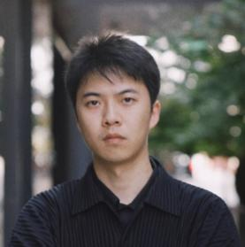
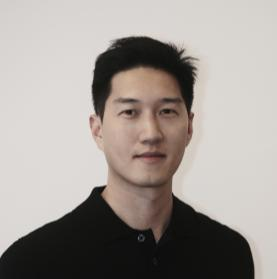

HANZ Design Collective, HDC., is a New York-based multidisciplinary design studio working worldwide across architecture, interiors, spatial design, identity, and digital experience.HANZ Design Collective，简称 HDC，是一家总部位于纽约、面向全球实践的多元设计工作室，业务涵盖建筑、室内、空间设计、品牌识别与数字体验。
Our practice is grounded in architecture and interior design, with a focus on hospitality, residential, retail, and food & beverage projects. We approach each project as a complete spatial and visual experience, considering how a place is planned, built, seen, remembered, and communicated.我们的实践以建筑与室内设计为核心，专注于酒店、住宅、零售与餐饮空间。我们将每个项目视为一个完整的空间与视觉体验，关注一个场所如何被组织、建造、观看、记忆与传播。
Beyond space, HDC extends its design thinking into brand identity, graphic systems, websites, presentations, and 3D visualization — shaping not only the physical environment, but also the visual and digital presence that surrounds it.在空间设计之外，HDC 也将设计思维延展至品牌识别、平面系统、网站、提案表达与三维可视化，塑造的不仅是物理环境，也包括围绕项目展开的视觉形象与数字呈现。
The studio's core members bring experience from internationally recognized practices including SCDA Architects, Yabu Pushelberg, OMA, and Gensler. With backgrounds across the U.S., China, Singapore, and broader Asia, HDC works fluidly across cultures, markets, and scales.工作室核心成员拥有 SCDA Architects、Yabu Pushelberg、OMA 与 Gensler 等国际设计事务所的工作经历。依托在美国、中国、新加坡及亚洲多地的项目经验，HDC 能够在不同文化、市场与尺度之间灵活工作。
Architecture, interiors, spatial planning, adaptive reuse — hospitality, residential, retail, and F&B environments.建筑、室内、空间规划、改造更新，酒店、住宅、零售与餐饮空间。
Brand strategy, visual identity, art direction, graphic systems, signage, and presentation design.品牌策略、视觉识别、艺术指导、平面系统、导视与提案设计。
3D visualization, rendering, concept imagery, diagrams, spatial storytelling, and film-based presentation.三维可视化、效果图、概念图像、分析图、空间叙事与影像化表达。
Web design, digital experience, interactive presentations, portfolio systems, and digital brand environments.网站设计、数字体验、互动提案、作品集系统与数字品牌环境。

Yuhan Zhang is an award-winning architectural designer and green building professional. He holds a Master of Architecture from the Yale School of Architecture and an honors bachelor’s degree from the University of California, Berkeley.
Before co-founding HDC, he practiced at SCDA and other internationally recognized architecture firms, working on projects across the U.S., Asia, and Europe. His work has received the New York Architectural Design Gold Award, the MUSE Design Award Gold, and recognition from the International Design Awards.
张煜晗是常驻纽约的获奖建筑设计师及 LEED AP BD+C 认证绿色建筑专业人士。他毕业于耶鲁大学建筑学院，并此前以荣誉学位毕业于加州大学伯克利分校。
在共同创立 HDC 之前，张煜晗曾任职于 SCDA 及其他国际知名建筑事务所，参与美国、亚洲及欧洲多个建筑与室内项目。他的作品曾获得纽约建筑设计金奖、MUSE Design Award 金奖，以及 International Design Awards 等国际奖项认可。

Cheng Chen is a New York-based interior designer with over a decade of experience in hospitality and high-end residential design. He graduated from Parsons School of Design and has worked with internationally recognized design practices including SCDA and Yabu Pushelberg.
His work includes long-term collaborations with leading hotel brands such as Marriott and InterContinental. He has received first prize in the GIC Global Innovative Hotel Competition, among other international awards.
陈诚是常驻纽约的室内设计师，毕业于帕森斯设计学院，拥有超过十年的酒店与高端住宅室内设计经验。
他曾任职于 SCDA，并随后在 Yabu Pushelberg 从事室内设计工作，长期参与万豪、洲际等国际酒店品牌项目。他的作品曾获得 GIC 全球创新酒店设计大赛一等奖，以及其他国际设计奖项认可。